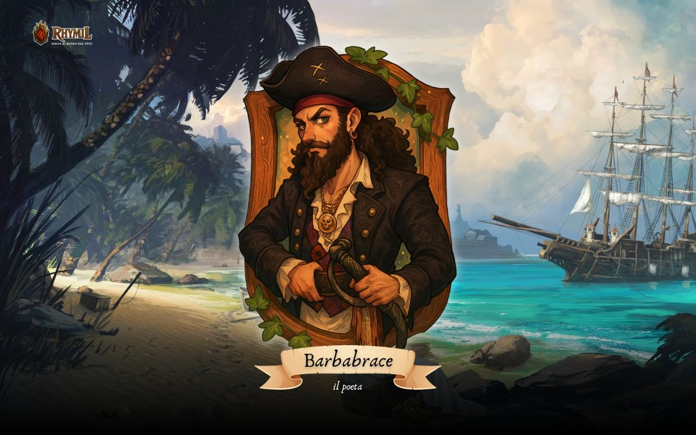
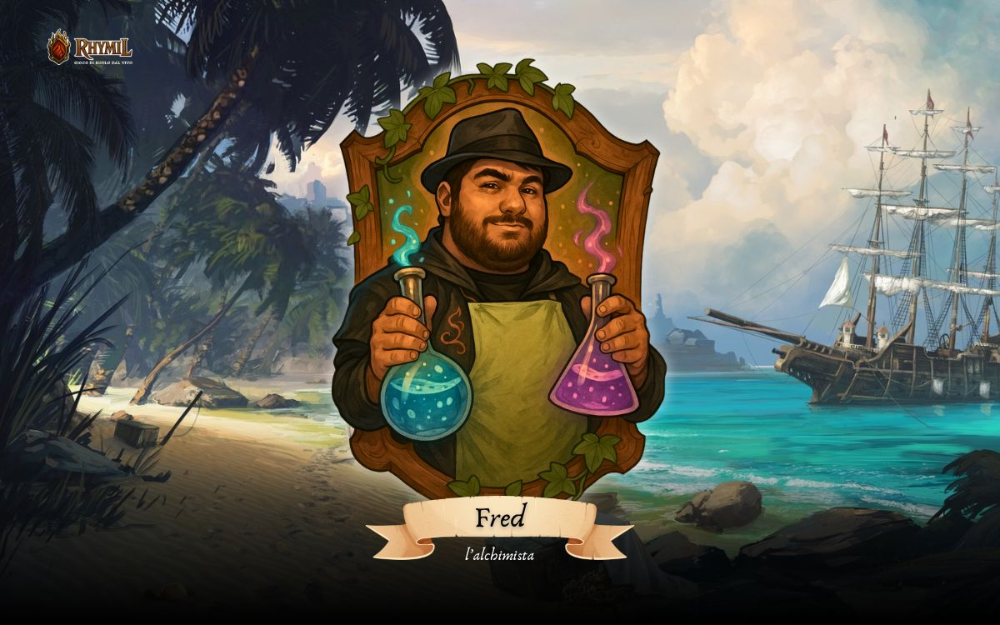
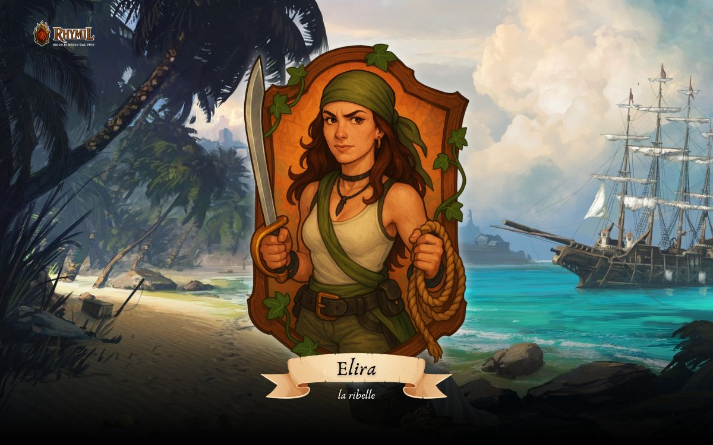
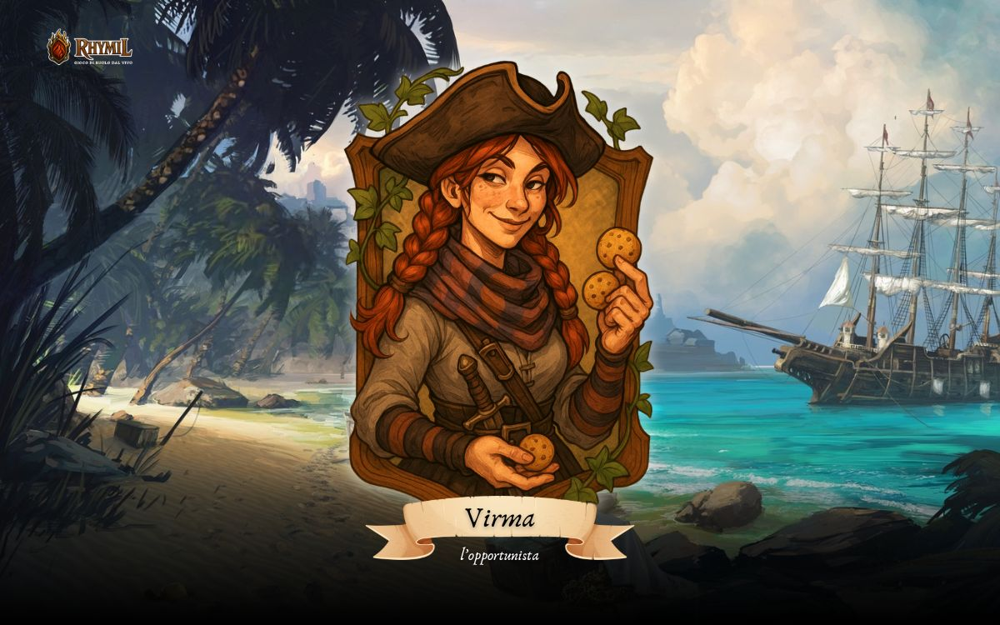
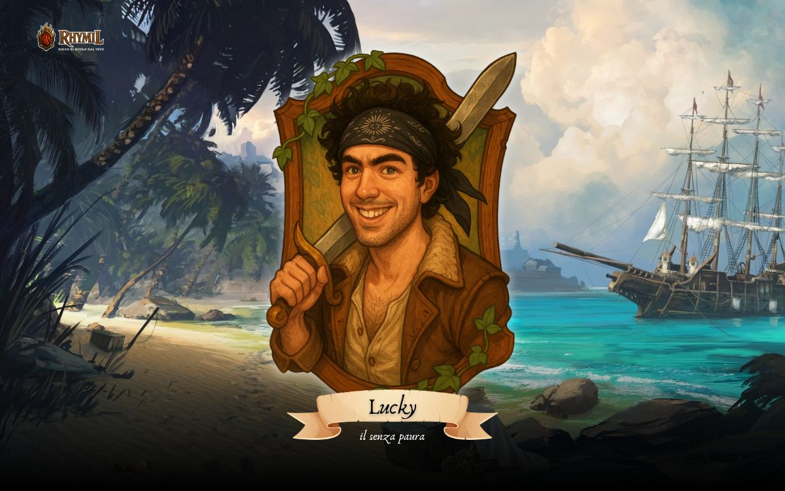
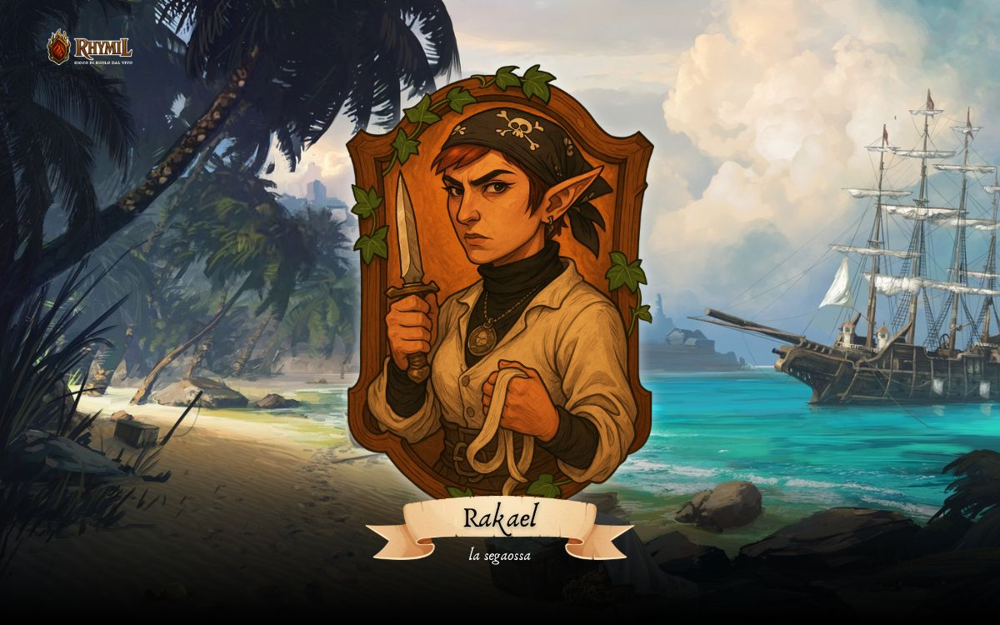
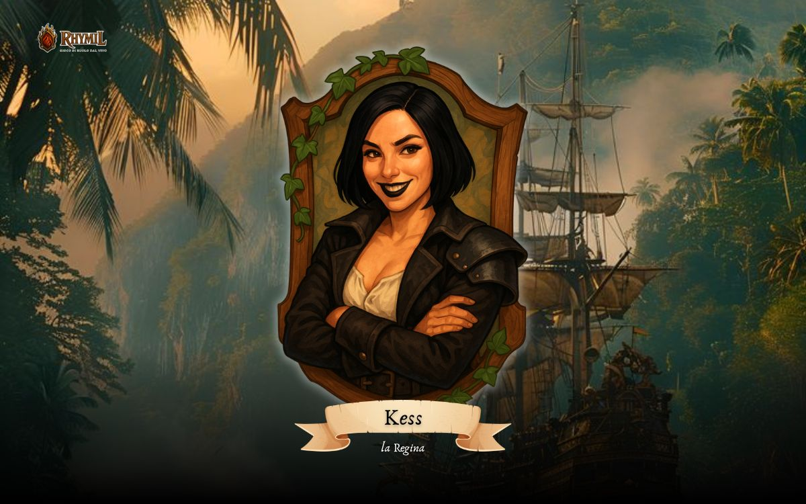
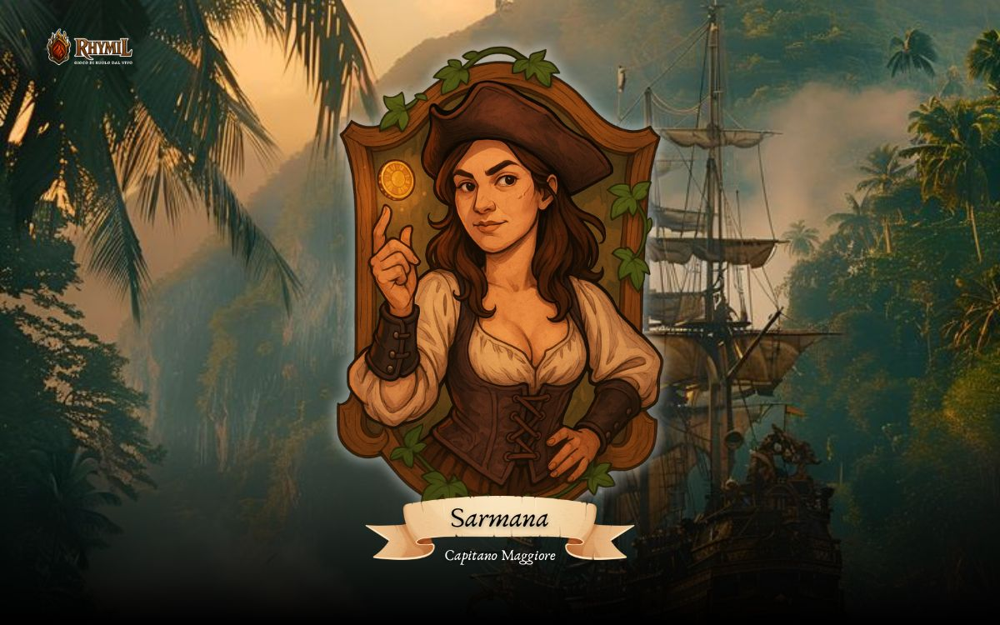

Barbabrace - Alberto Fardin
Un corsaro più che un pirata che ama raccogliere qualunque informazione prima di prendere una decisione ed agire. La sfortuna lo ha colpito più volte, facendolo inciampare in situazioni difficili, ma è sempre riuscito a uscirne indenne. Il soprannome 'Barbabrace' gli è stato dato dopo essere sopravvissuto a un incendio su una nave, che lui stesso aveva scatenato. Solo pochi conoscono il suo vero nome.

Fred Rayles - Daniele De Castro
Mercante che adora sperimentare nella creazione di nuove sostanze. Adora essere al centro di tutto anche se non lo da a vedere. Fa parte della fazione pirati per via delle similitudini ma non sembra per nulla un pirata. Adora contrattare e sbalordire con “io sono arrivato prima”.

Roy Backler - Davide Zanon
Mercante prima che pirata, adora i soldi e farebbe qualsiasi cosa per ottenerli. Il suo motto, non che linea guida, è “Tutto e tutti hanno un prezzo”.

Elira Varnem - Laura Cameran
Guaritrice ed alchimista cresciuta nell’Ordine degli Eruditi, ha abbandonato una vita di studio per seguire il richiamo del mare e l’amore per un giovane pirata. Rimasta segnata dalla perdita e dalla corruzione che ha travolto il mondo, ora cerca vendetta e redenzione.

Virma - Anita Greggio
Pirata che adora distruggere le cose. E’ scappata dalla famiglia da qualche anno e da allora fa parte della ciurma della Medusa. Ha il vizio di bere e per questo non è sempre lucida nei combattimenti, preferisce sguainare l’ascia piuttosto che avere una conversazione civile.

Thomas Avery - Omar Corona
Nato su di una scialuppa in mezzo al mare da una prostituta, Avery cresce fra le cime e i flutti, saltando da un ponte all'altro, persona affidabile anche per essere un pirata e dalla mente molto pratica per risolvere ogni tipo di questione. Il nome `zampa-corta` e la moneta che porta al collo raccontano una storia che stenta a raccontare.

Lucky il `Senza Paura - Mattia Rupil
Cresciuto tra i pirati, ha sviluppato un’ossessione per la fortuna e le superstizioni. Pavido e sempre pronto a evitare il pericolo, è un maestro nell’inventare storie e prendersi meriti che non ha. Eppure, grazie al suo talento nel raccontare gesta epiche, si è guadagnato un posto nella ciurma e, chissà come, la sopravvivenza.

Rakael `Sega-Ossa` - Asia Celin
Giovane elfa fuggita dalla rigida sorveglianza familiare per abbracciare la vita avventurosa della pirateria. Grazie agli insegnamenti di medicina trasmessile dalla madre, si è rapidamente distinta a bordo, guadagnandosi un ruolo di rispetto all'interno dell'equipaggio.

Zuleika - Lisa Daniele
Gnoma progettatrice ritrovata su una spiaggia con una ferita sulla testa e senza memoria. Lei pensa che la ferita le sia stata inferta da un giro sulla Ruota, ma il motivo le è ignoto.

Valor Jarkun - Michele Bonazza
Figlio di un costruttore di barche si è aggregato alla Fratellanza dei Pirati per trovare vendetta contro chi gli ha ucciso i genitori. Da allora si è specializzato nell'arte della spada e dello scudo.

Taritas - master Lorenzo
l'unico Re

Kess - master Jennifer
la Regina

Isabela - master Silvia
Capitano Maggiore, detta la Sirena. Impulsiva,ironica testarda e manipoltrice. Ama il Rhum e i soldi più di qualsiasi altra cosa. Ha avuto diversi amanti, sia uomini che donne, ma gira voce che solo uno sia riuscito a rapire il suo cuore e non è il defunto marito. La sua nave è un Galeone totalmente fatto di legno scurissimo e vele nere chiamato 'Lo Smeraldo nero' la sua polena una sirena con un arpione in mano. Attualmente portatrice e custode di un artefatto di manifattura elfica.

Vane
Capitano Maggiore, detto la Murena.

Akkor - master Tobi
Capitano Maggiore, detto lo Squalo Bianco.

Sarmana - master Jennifer
Capitano Maggiore, detta l'Orca.

Rey - master Silvia
È una giovane mezzelfa oscura,lo si può notare dalla sua pelle dal grigio chiaro con qualche punto tendente al rosa rispetto ad un Kiuth puro. Non si sa molto su di lei tranne che è una donna fidata di Re Taritas.


{kind=link}
{kind=link}
{kind=link}
{kind=link}
{kind=link}
{kind=link}
{kind=link}
{kind=link}